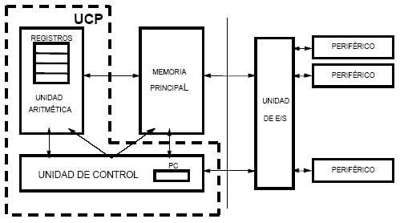

Elementos de la arquitectura de Von Neumann
Este modelo trata a la computadora como una caja negra y define como ésta realiza el procesamiento. Se define a la computadora como cuatro subsistemas: memoria, unidad aritmética-lógica, unidad de control y elementos de entrada/salida.

- La Unidad Central de Procesamiento o CPU, donde se ejecutan las instrucciones y se realizan las operaciones matemáticas. Internamente consta de la Unidad Aritmética–Lógica (ALU), que realiza todas las operaciones que involucran un procesamiento aritmético o lógico; y la Unidad de Control (CU), que ejecuta las operaciones de decisión, control y movimiento de datos.
- Memoria: almacena los datos y programas.
- Dispositivos de entrada/salida: permiten la comunicación entre el usuario y la computadora.
- Bus de datos: interconectan los elementos